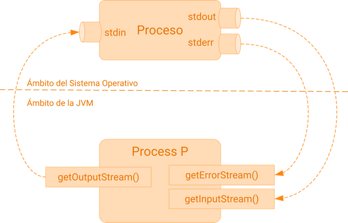
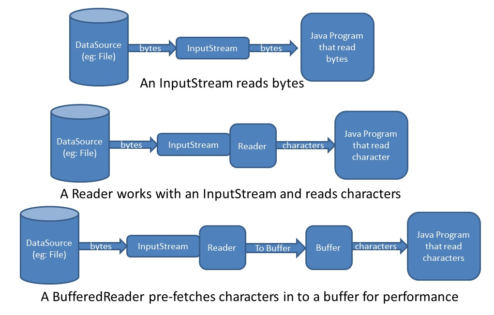
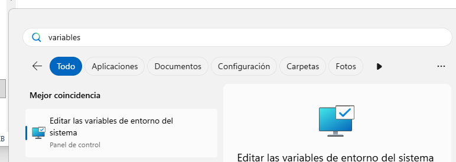
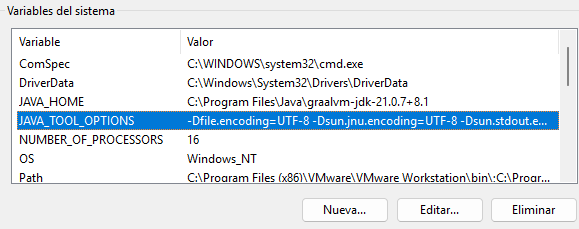

Unidad 2. Programación de procesos: Gestión de la E-S de un proceso
Índice
Control de la E/S estándar de un proceso
Ya hemos comentado que un subproceso no tiene terminal o consola en el que poder mostrar su información. Toda la E/S por defecto (stdin -> teclado, stdout y stderr -> pantalla) por defecto se redirige al proceso padre. Es el proceso padre el que puede usar estos streams para recoger o enviar información al proceso hijo.
Código del proceso hijo
En ningún momento, cuando estamos programando un proceso, debemos pensar si va a ser lanzado como padre o como hijo.
Es más, todos los programas que hacemos son lanzados como hijos por el IDE (Netbeans) y eso no hace que cambiemos nuestra forma de programarlos.
Un proceso que vayamos a lanzar como hijo debería funcionar perfectamente como proceso independiente y puede ser ejecutado directamente sin tener que hacerle ningún tipo de cambio.
Este intercambio de información nos da mucha flexibilidad y proporciona una forma de control y comunicación sobre el proceso hijo.
En la relación padre-hijo que se crea entre procesos los descriptores también se redirigen desde el hijo hacia el padre, usando 3 tuberías (pipes), una por cada stream de E/S por defecto. Esas tuberías pueden usarse de forma similar a cómo se hace en los sistemas Linux.

Salida estándar: getInputStream()
No sólo es importante recoger el valor de retorno de un comando, sino que muchas veces nos va a ser de mucha utilidad el poder obtener la información que el proceso genera por la salida estándar o por la salida de error.
Para esto vamos a utilizar el método public abstract InputStream getInputStream() de la clase Process para leer el stream de salida del proceso, es decir, para leer lo que el comando ejecutado (proceso hijo) ha enviado a la consola.
Process p = pbuilder.start(); BufferedReader processOutput = new BufferedReader(new InputStreamReader(p.getInputStream())); String linea; while ((linea = processOutput.readLine()) != null) { System.out.println("> " + linea); } processOutput.close();

Charsets y encodings
Desde el inicio de la informática los juegos de caracteres y las codificaciones han supuesto un auténtico quebradero de cabeza para los programadores, especialmente cuando trabajamos con juegos de caracteres no anglosajones. Pues bien, la consola de Windows no iba a ser una excepción.
Para usar un encoding concreto, la clase InputStreamReader, que pasa de gestionar bytes a caracteres, tiene un constructor que permite especificar el tipo de codificación usado en el stream de bytes que recibimos, así que que debemos usar este constructor cuando trabajemos con aplicaciones de consola.
new InputStreamReader(p.getInputStream(), "CP850");
Además, para usar una codificación universal, podemos forzar que Netbeans, o mejor dicho la máquina virtual que usa Netbeans, utilice por defecto el charset
UTF-8.
Para hacerlo podemos modificar las opciones de la JVM en un proyecto concreto, añadiendo en las propiedades del proyecto, en la secciónRun, los parámetros -Dstdout.encoding=UTF-8 -Dstderr.encoding=UTF-8 en la opción de VM Options.


Para que la configuración se aplique a todos los proyectos debemos añadir a las propiedades de entorno del sistema una nueva variable
JAVA_TOOL_OPTIONSy darle el valor -Dfile.encoding=UTF-8 -Dsun.jnu.encoding=UTF-8 -Dsun.stdout.encoding=UTF-8 -Dsun.stderr.encoding=UTF-8 -Dconsole.encoding=UTF-8.
Error estándar: getErrorStream()
Curiosamente, o no tanto, además de la salida estándar, también podemos obtener la salida de error (stderr) que genera el proceso hijo para procesarla desde el padre.
Si la salida de error ha sido previamente redirigida usando el método ProcessBuilder.redirectErrorStream(true) entonces la salida de error y la salida estándar llegan juntas con getInputStream() y no es necesario hacer un tratamiento adicional.
Si por el contrario queremos hacer un tratamiento diferenciado de los dos tipos de salida, podemos usar un esquema similar al usado anteriormente, con la salvedad de que ahora en vez de llamar a getInputStream() lo hacemos con getErrorStream().
Process p = pbuilder.start(); BufferedReader processError = new BufferedReader(new InputStreamReader(p.getErrorStream())); // En este ejemplo, por ver una forma diferente de recoger la información, // en vez de leer todas las líneas que llegan, recogemos la primera línea // y suponemos que nos han enviado un entero. int value = Integer.parseInt(processError.readLine()); processError.close();
Patrón de diseño Decorator o Wrapper
En ambos tipos de streams de entrada (input y error) estamos recogiendo la información de un objeto de tipo BufferedReader. Podríamos usar directamente el InputStream que nos devuelven los métodos de Process, pero tendríamos que encargarnos nosotros de convertir los bytes a caracteres, de leer el stream carácter a carácter y de controlar el flujo al no disponer de un buffer.
Todo esto nos lo podemos ahorrar usando clases que gestionan el flujo a un nivel de concreción más alto, usando sin llegar a ser conscientes otro patrón de diseño bastante común, Patrón de diseño Decorator también llamado wrapper o envoltorio.
Decorator es un patrón de diseño estructural que te permite añadir funcionalidades a objetos colocando estos objetos dentro de objetos encapsuladores especiales que contienen estas funcionalidades.
Vamos a ver un ejemplo completo de uso de todas las funcionalidad anteriores
import java.io.*; public class Ejercicio2 { public static void main(String[] args) { String comando = "notepad"; ProcessBuilder pbuilder = new ProcessBuilder (comando); Process p = null; try { p = pbuilder.start(); // 1- Procedemos a leer lo que devuelve el proceso hijo InputStream is = p.getInputStream(); // 2- Lo convertimos en un InputStreamReader // De esta forma podemos leer caracteres en vez de bytes // El InputStreamReader nos permite gestionar diferentes codificaciones InputStreamReader isr = new InputStreamReader(is); // 2- Para mejorar el rendimiento hacemos un wrapper sobre un BufferedReader // De esta forma podemos leer enteros, cadenas o incluso líneas. BufferedReader br = new BufferedReader(isr); // A Continuación leemos todo como una cadena, línea a línea String linea; while ((linea = br.readLine()) != null) System.out.println(linea); } catch (Exception e) { System.out.println("Error en: "+comando); e.printStackTrace(); } finally { // Para finalizar, cerramos los recursos abiertos br.close(); isr.close(); is.close(); } } }
Entrada estándar: getOutputStream()
No sólo podemos recoger la información que envía el proceso hijo sino que, además, también podemos enviar información desde el proceso padre al proceso hijo, usando el último de los tres streams que nos queda, el stdin.
Igual que con las entradas que llegan desde el proceso hijo, podemos enviar la información usando directamente el OutputStream del proceso, pero lo haremos de nuevo con un Decorator.
En este caso, el wrapper de mayor nivel nivel para usar un OutputStream es la clase PrintWriter que nos ofrece métodos similares a los de System.out.printxxxxx para gestionar el flujo de comunicación con el proceso hijo.
PrintWriter toProcess = new PrintWriter( new BufferedWriter( new OutputStreamWriter( p.getOutputStream(), "UTF-8")), true); toProcess.println("sent to child");
Heredar la E/S del proceso padre
Con el método inheritIO() podemos redireccionar todos los flujos de E/S del proceso hijo a la E/S estándar del proceso padre.
ProcessBuilder processBuilder = new ProcessBuilder("/bin/sh", "-c", "echo hello"); processBuilder.inheritIO(); Process process = processBuilder.start(); int exitCode = process.waitFor();
En el ejemplo anterior, tras invocar al método inheritIO() podemos ver la salida del comando ejecutado en la consola del proceso padre dentro del IDE Netbeans.
Úsalo para depurar la comunicación/sincronización padre-hijo
Este método es útil para depurar, pero no se recomienda para código de producción. Es mejor usar los métodos getInputStream() y getErrorStream() para leer las salidas y errores del subproceso, y el método getOutputStream() para escribir en el subproceso.
Redirección de la E/S estándar
En un sistema real, probablemente necesitemos guardar los resultados de un proceso en un archivo de log o de errores para su posterior análisis. Afortunadamente lo podemos hacer sin modificar el código de nuestras aplicaciones usando los métodos que proporciona el API de ProcessBuilder para hacer exactamente eso.
Por defecto, tal y como ya hemos visto, los procesos hijos reciben la entrada a través de una tubería a la que podemos acceder usando el OutputStream que nos devuelve Process.getOutputStream().
Sin embargo, tal y como veremos a continuación, esa entrada estándar se puede cambiar y redirigirse a otros destinos como un fichero usando el método redirectOutput(File). Si modificamos la salida estándar, el método getOutputStream() devolverá ProcessBuilder.NullOutputStream.
Redirigir antes de ejecutar
Es importante fijarse en qué momento se realiza cada acción sobre un proceso.
Antes hemos visto que los flujos de E/S se consultan y gestionan una vez que el proceso está en ejecución, por lo tanto los métodos que nos dan acceso a esos streams son métodos de la clase Process.
Si lo que queremos es redirigir la E/S, como vamos a ver a continuación, lo haremos mientras preparamos el proceso para ser ejecutado. De forma que cuando se lance sus streams de E/S se modifiquen. Por eso en esta ocasión los métodos que nos permiten redireccionar la E/S de los procesos son métodos de la clase ProcessBuilder.
Vamos a ver con un ejemplo cómo hacer un programa que muestre la versión de Java. Ahora bien, en esta ocasión la salida se va a guardar en un archivo de log en vez de enviarla al padre por la tubería de salida estándar:
ProcessBuilder processBuilder = new ProcessBuilder("java", "-version"); // La salida de error se enviará al mismo sitio que la estándar processBuilder.redirectErrorStream(true); File log = folder.newFile("java-version.log"); processBuilder.redirectOutput(log); Process process = processBuilder.start();
En el ejemplo anterior podemos observar como se crea un archivo temporal llamado java-version.log e indicamos a ProcessBuilder que la salida la redirija a este archivo.
Es lo mismo que si llamásemos a nuestra aplicación usando el operador de redirección de salida:
java ejemplo-java-version > java-version.log
Código del proceso hijo
Si el proceso hijo que lanzamos, en vez de ser un comando del sistema, es otra clase java, en ningún momento tenemos que modificar el código de este proceso para que funcione como hijo.
Por lo tanto, el proceso hijo seguirá haciendo
System.out.println("Versión de Java: " + System.getProperty("java.version"));
y será el sistema operativo el que se encargue de redirigir las salidas o entradas al fichero, o donde se haya configurado con los métodos de redirección de la clase ProcessBuilder.
Ahora vamos a fijarnos en una variación del ejemplo anterior. Lo que queremos hacer ahora es añadir (append to) información al archivo de log file en vez de sobrescribir el archivo cada vez que se ejecuta el proceso. Con sobrescribir nos referimos a crear el archivo vacío si no existe, o bien borrar el contenido del archivo si éste ya existe.
File log = tempFolder.newFile("java-version-append.log"); processBuilder.redirectErrorStream(true); processBuilder.redirectOutput(Redirect.appendTo(log));
Otra vez más, es importante hacer notar la llamada a redirectErrorStream(true). En el caso de que se produzca algún error, se mezclarán con los mensajes de salida en el fichero..
En el APi de ProcessBuilder encontramos métodos para redireccionar también la salida de error estándar y la entrada estándar de los procesos.
- redirectError(File)
- redirectInput(File)
Para hacer las redirecciones también podemos utilizar la clase ProcessBuilder.Redirect como parámetro para las versiones sobrecargadas de los métodos anteriores, utilizando uno de los siguientes valores
| Valor | Significado |
|---|---|
| Redirect.DISCARD | La información se descarta |
| Redirect.to(File) | La información se guardará en el fichero indicado. Si existe, se vacía. |
| Redirect.from(File) | La información se leerá del fichero indicado |
| Redirect.appendTo(File) | La información se añadirá en el fichero indicado. Si existe, no se vacía |
Estos valores son campos estáticos de la clase Redirect y pueden ser usados como parámetros para los métodos sobrecargados redirectOutput, redirectError y redirectInput.
File log = folder.newFile("sampleInputData.csv");
processBuilder.redirectInput(Redirect.from(log));